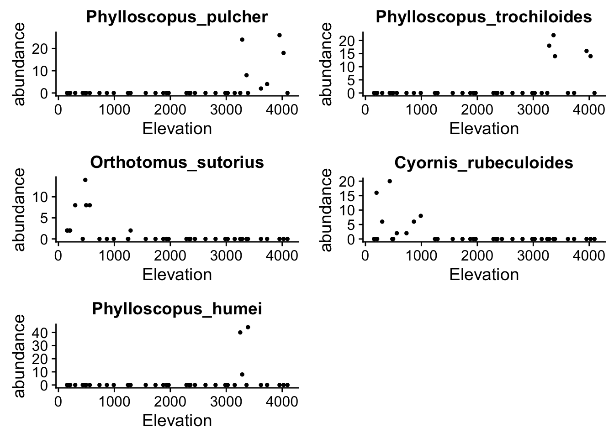
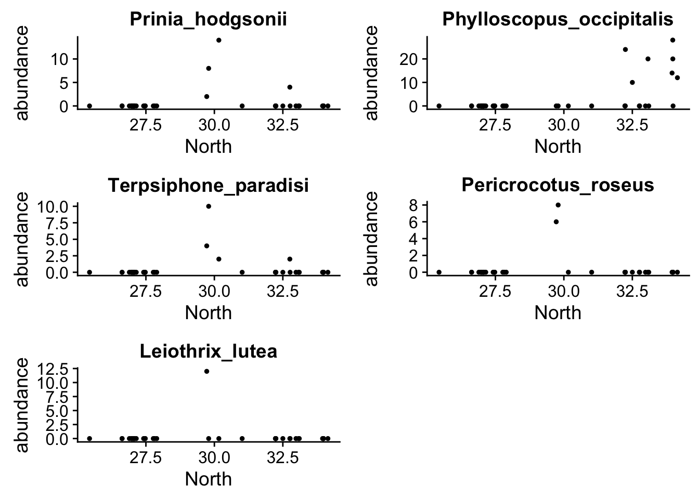
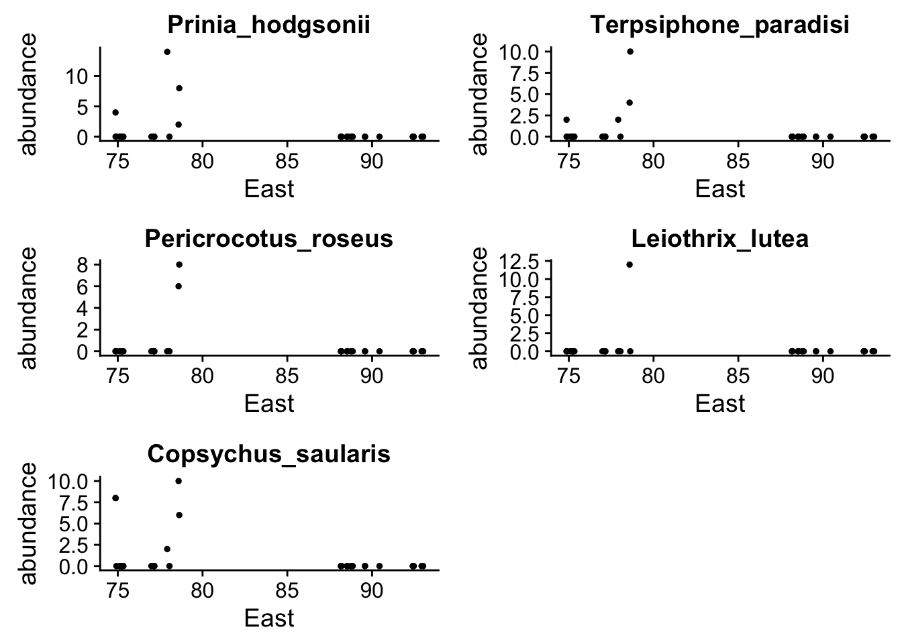
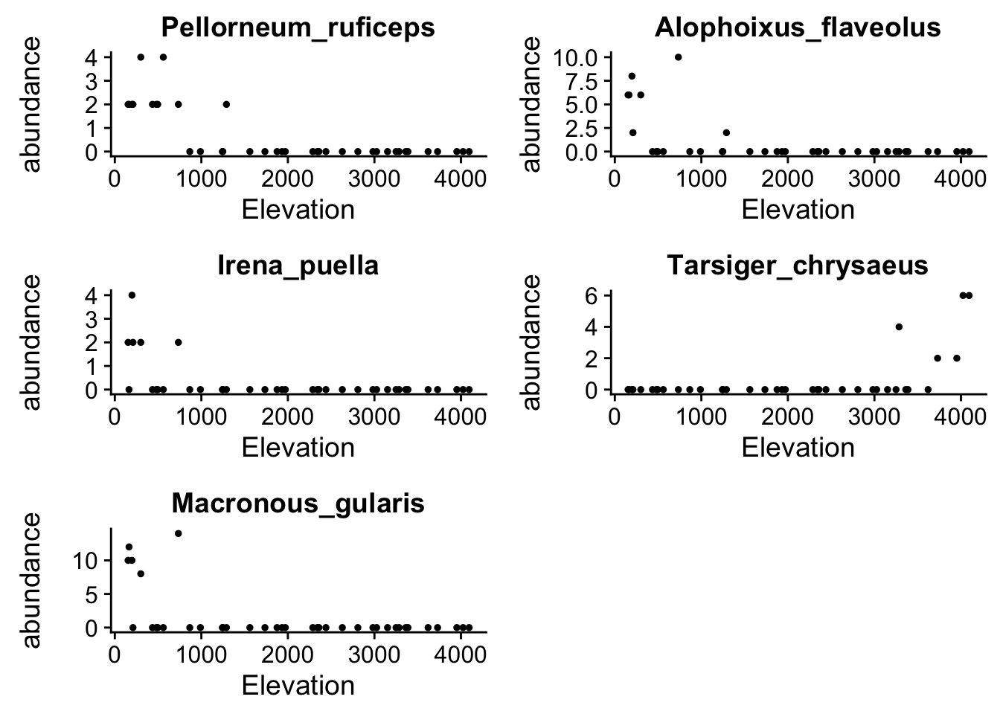
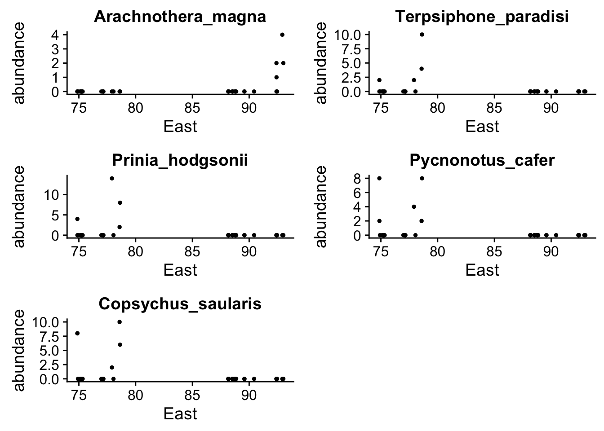
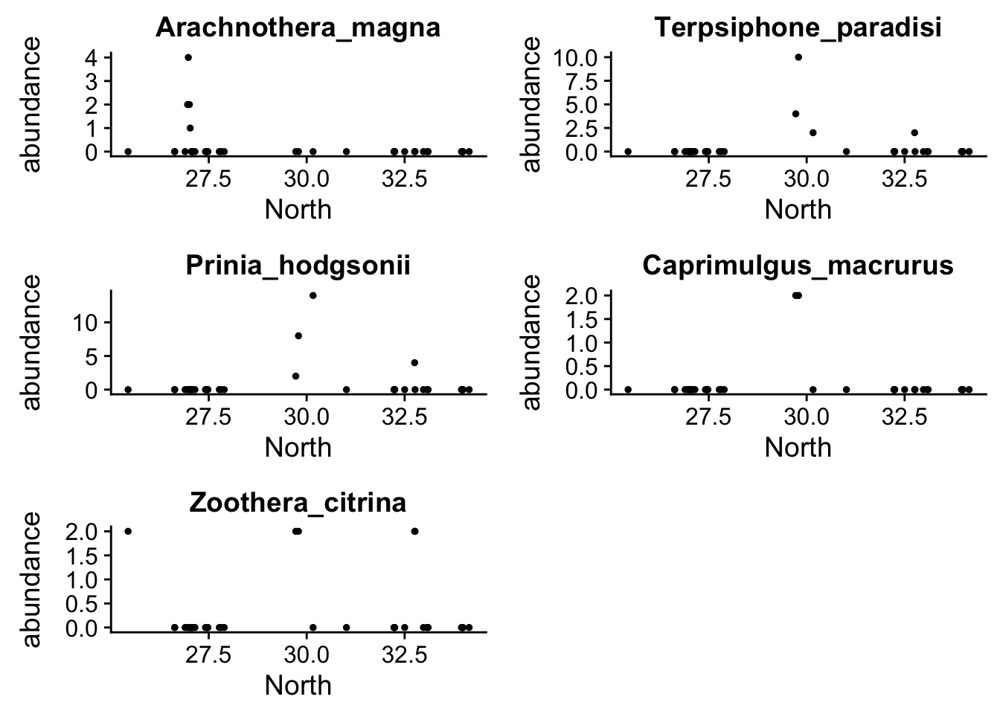

In this script, we perform distrom on the birds data and see the performance of the method and how it treats the known sources of variation like elevation of the ranges, East-West directional influence on the bird patterns.
library(ecostructure)
library(covtpx)
library(Biobase)
library(distrom)
library(Seurat)Loading the counts data
data <- get(load(system.file("extdata", "HimalayanBirdsData.rda", package = "ecostructure")))
taxonomic_counts <- t(exprs(data))
grid_metadata <- pData(phenoData(data))covars1 <- grid_metadata[,1:3]
covars2 <- model.matrix(~ factor(grid_metadata$WorE)-1)
covars <- cbind(covars1, covars2)cl <- makeCluster(parallel::detectCores(),type=ifelse(.Platform$OS.type=="unix","FORK","PSOCK"))
print(cl)## socket cluster with 4 nodes on host 'localhost'system.time(fits <- dmr(cl, covars[,1:3], taxonomic_counts+1, verb=1))## fitting 38 observations on 304 categories, 3 covariates.
## converting counts matrix to column list...
## distributed run.
## socket cluster with 4 nodes on host 'localhost'## user system elapsed
## 0.093 0.018 0.904stopCluster(cl)coef(fits)## Warning in `[<-`(`*tmp*`, sapply(B, is.null), value = <S4 object of class
## structure("dsCMatrix", package = "Matrix")>): implicit list embedding of S4
## objects is deprecated## 4 x 304 sparse Matrix of class "dmrcoef"## [[ suppressing 304 column names 'Macropygia_unchall', 'Streptopelia_chinensis', 'Streptopelia_senegalensis' ... ]]##
## intercept -5.974657 -0.9226243028 -5.928137 -6.023448 -3.67108687
## Elevation . -0.0002548307 . . .
## North . . . . 0.04567860
## East . -0.0532181151 . . -0.04014648
##
## intercept -5.928137 -5.928137 -5.883686 -5.883686 -6.023448 -5.928137
## Elevation . . . . . .
## North . . . . . .
## East . . . . . .
##
## intercept -5.974657 -6.023448 -5.998755 -6.023448 -6.048765 -5.998755
## Elevation . . . . . .
## North . . . . . .
## East . . . . . .
##
## intercept -6.023448 -6.023448 -6.023448 -5.974657 -5.974657 -6.832218340
## Elevation . . . . . -0.000381622
## North . . . . . .
## East . . . . . 0.021590475
##
## intercept -5.974657 -5.928137 -3.33933717 -5.651884 -5.928137 -6.048765
## Elevation . . . . . .
## North . . -0.08253285 . . .
## East . . . . . .
##
## intercept -5.883686 -5.928137 -5.974657 -5.841126 -5.928137 -5.974657
## Elevation . . . . . .
## North . . . . . .
## East . . . . . .
##
## intercept -5.841126 -5.5375769647 -2.8997572902 -5.951127 -9.5433004
## Elevation . -0.0001646084 -0.0001652301 . .
## North . . . . 0.1277196
## East . . -0.0318243904 . .
##
## intercept -5.883686 -5.928137 -6.023448 -6.048765 -6.023448 -5.5793569080
## Elevation . . . . . -0.0001526264
## North . . . . . .
## East . . . . . .
##
## intercept -5.928137 -6.048765 -6.048765 -6.023448 -5.974657 -5.928137
## Elevation . . . . . .
## North . . . . . .
## East . . . . . .
##
## intercept -6.023448 -5.905665 -5.905665 -5.974657 -5.883686 -6.023448
## Elevation . . . . . .
## North . . . . . .
## East . . . . . .
##
## intercept -5.974657 2.004817e+01 -5.883686 -5.883686 -6.023448 -5.883686
## Elevation . -2.563448e-05 . . . .
## North . -3.872699e-01 . . . .
## East . -1.732423e-01 . . . .
##
## intercept -8.36415618 -6.023448 -1.208778e+01 -3.3776753255 12.3633905517
## Elevation . . 5.067298e-04 0.0005398629 0.0005081876
## North 0.08670044 . 1.903083e-01 -0.1183072400 -0.3173482450
## East . . . . -0.1170805709
##
## intercept -10.5517343 -2.5362604 -1.091005e+01 -5.974657 -5.1678311385
## Elevation . . 2.562237e-04 . 0.0003311548
## North 0.1604064 -0.1009965 1.648610e-01 . -0.0618064703
## East . . . . 0.0100962961
##
## intercept -8.16201333 -5.841126 -15.8495414 -6.023448 -6.023448 -5.928137
## Elevation . . . . . .
## North . . 0.3575554 . . .
## East 0.02938516 . . . . .
##
## intercept -5.974657 -5.974657 -5.974657 -5.928137 -3.99102731
## Elevation . . . . .
## North . . . . -0.06014811
## East . . . . .
##
## intercept -1.180275e+01 -5.928137 -9.7322329330 -6.023448 -2.617654e+01
## Elevation 2.618901e-04 . 0.0001678818 . -1.978607e-04
## North . . 0.1351695511 . 2.967415e-01
## East 6.863874e-02 . . . 1.423851e-01
##
## intercept -2.9013971912 -1.1749266865 1.662961e+01 -5.9969661399
## Elevation -0.0006959724 -0.0005029767 -7.674125e-05 -0.0001647991
## North . -0.1207110566 -3.267070e-01 -0.0585210148
## East -0.0142541088 . -1.525747e-01 0.0276882156
##
## intercept -0.573386068 -2.788620 -5.841126 -5.974657 -7.83908177 -5.928137
## Elevation 0.000110961 . . . . .
## North -0.173151363 -0.100241 . . 0.07410712 .
## East . . . . . .
##
## intercept -8.2282060399 23.4056966058 -5.841126 -6.023448 -5.883686
## Elevation -0.0006656191 -0.0003757779 . . .
## North . -0.3555682014 . . .
## East 0.0461493564 -0.2142362187 . . .
##
## intercept -5.928137 -5.928137 -5.883686 -6.023448 -6.023448 -5.928137
## Elevation . . . . . .
## North . . . . . .
## East . . . . . .
##
## intercept 17.1435430401 -5.928137 24.1529017280 -6.023448 -9.7631818405
## Elevation -0.0002588466 . -0.0001781662 . 0.0001742243
## North -0.3226479339 . -0.4627939876 . 0.1201414732
## East -0.1527544073 . -0.1904372874 . .
##
## intercept -12.33395 -6.023448 -5.841126 -5.841126 -7.1961299446 -6.023448
## Elevation . . . . -0.0007048987 .
## North 0.22966 . . . 0.1021505854 .
## East . . . . -0.0004588928 .
##
## intercept 38.7865670612 -6.023448 -3.7589094562 -5.841126 -5.928137
## Elevation -0.0001750351 . 0.0001694494 . .
## North -0.6363795727 . . . .
## East -0.3041458096 . -0.0294857681 . .
##
## intercept -6.023448 -5.841126 -1.235124e+01 13.3184810646 -5.841126
## Elevation . . 3.465767e-04 0.0005044865 .
## North . . . -0.3669917471 .
## East . . 7.766082e-02 -0.1114623061 .
##
## intercept -6.631426e-01 -1.080476e+01 3.6683462468 -1.556360e+01
## Elevation 9.234907e-05 3.332639e-04 0.0009639794 6.938426e-04
## North -1.686792e-01 . -0.1895685444 2.903349e-01
## East . 5.786875e-02 -0.0655478807 .
##
## intercept -2.743179e+01 -7.54479596 -9.3316428057 -28.514789848
## Elevation 4.963023e-04 . 0.0001874015 -0.000235842
## North 3.970959e-01 0.05408969 0.1024871944 0.331964867
## East 1.189167e-01 . . 0.158960528
##
## intercept -32.109361917 -1.349699e+01 -8.9153110763 -1.367338e+01
## Elevation 0.000109358 3.114621e-04 -0.0004215906 1.493154e-04
## North 0.620268634 . 0.1585563006 .
## East 0.098533357 9.742368e-02 . 9.854703e-02
##
## intercept -6.102720208 -5.761083 -1.123115e+01 -1.916368 -5.974657
## Elevation 0.000859828 . 5.206552e-04 . .
## North -0.033876510 . . -0.122500 .
## East . . 6.429553e-02 . .
##
## intercept -6.023448 -5.800304 -5.928137 -1.1769819761 -5.974657
## Elevation . . . -0.0002744479 .
## North . . . . .
## East . . . -0.0499310947 .
##
## intercept -7.3220851916 -3.62880529 -4.64866609 -1.216429e+01
## Elevation -0.0002459184 . . -1.475946e-04
## North . -0.06942114 -0.03768868 .
## East 0.0234764719 . . 8.241307e-02
##
## intercept 2.722418e+01 -6.023448 -5.974657 -8.39252240 -5.928137
## Elevation -9.042607e-05 . . . .
## North -4.926685e-01 . . . .
## East -2.199835e-01 . . 0.03209679 .
##
## intercept -7.7734748030 -11.388142928 -5.883686 -5.974657 -5.928137
## Elevation 0.0001886556 0.000230358 . . .
## North . . . . .
## East 0.0213409815 0.063516637 . . .
##
## intercept -5.723343 -6.023448 -5.928137 -9.9731862625 -5.820507
## Elevation . . . -0.0001277852 .
## North . . . 0.1487023221 .
## East . . . . .
##
## intercept -6.3275436396 -2.9526115613 -3.205745e+01 -3.4858237050
## Elevation 0.0002852047 0.0001958075 -3.528874e-04 -0.0002798936
## North . -0.1060289790 3.846228e-01 -0.0610048975
## East . . 1.866283e-01 .
##
## intercept -5.974657 -4.8758255103 -5.974657 -2.592424e+01 -2.303848
## Elevation . -0.0004060418 . -1.282509e-04 .
## North . . . 2.311267e-01 -0.110081
## East . . . 1.653192e-01 .
##
## intercept -2.640055e+01 -1.6155476311 -5.883686 -7.99640563 -2.194415e+01
## Elevation -3.345788e-04 -0.0002734695 . . -6.610719e-04
## North 2.936134e-01 . . . 1.916137e-01
## East 1.503288e-01 -0.0443244135 . 0.02743445 1.423788e-01
##
## intercept -6.023448 -6.023448 -5.883686 -5.841126 -5.928137 -5.928137
## Elevation . . . . . .
## North . . . . . .
## East . . . . . .
##
## intercept 1.6174640250 -11.784660828 -0.4512617876 -6.023448
## Elevation 0.0001431011 0.000348219 0.0002889111 .
## North -0.2424509024 . -0.1883857719 .
## East . 0.065738037 . .
##
## intercept 17.4891981702 -3.8875535864 -5.974657 -6.023448 -6.023448
## Elevation -0.0003502126 0.0002709658 . . .
## North -0.2632264099 -0.0822091222 . . .
## East -0.1767422593 . . . .
##
## intercept -6.023448 -6.023448 -2.9600869040 -5.841126 -5.800304 -6.023448
## Elevation . . 0.0004169841 . . .
## North . . -0.1145790250 . . .
## East . . . . . .
##
## intercept -7.9677625723 -5.883686 -5.686975 -1.025973e+01 -4.3707318091
## Elevation -0.0003559492 . . -4.870972e-04 -0.0005364733
## North . . . . -0.0734836191
## East 0.0348739105 . . 6.639081e-02 0.0222571823
##
## intercept 22.1678930481 -4.3460669281 -9.4740376887 -4.2095504971
## Elevation -0.0002546224 -0.0006839614 0.0001987912 0.0005821543
## North -0.3610992990 0.1524335813 0.1088852836 -0.0885738926
## East -0.2007065848 -0.0558831981 . .
##
## intercept -1.350470e+01 -4.1223830150 -6.023448 -10.1200927 2.0370500094
## Elevation 1.989313e-04 0.0003629721 . . -0.0004144753
## North 2.554373e-01 -0.0817441662 . 0.1617882 .
## East . . . . -0.0832219797
##
## intercept -5.974657 -5.883686 -5.883686 -4.1646228 -3.232726e+01
## Elevation . . . . 4.053109e-04
## North . . . -0.0378409 3.427989e-01
## East . . . . 1.921818e-01
##
## intercept -7.5410584933 -5.841126 -5.6125979797 -5.928137 3.0112352864
## Elevation -0.0002221397 . -0.0001458963 . -0.0005416973
## North . . . . .
## East 0.0253751188 . . . -0.0925220767
##
## intercept -6.023448 -6.023448 -6.1302565364 -6.023448 -5.974657 -6.023448
## Elevation . . 0.0001393984 . . .
## North . . . . . .
## East . . . . . .
##
## intercept -5.883686 -5.974657 -5.928137 -6.2994291955 -9.0200505034
## Elevation . . . 0.0002327905 0.0002142244
## North . . . . 0.0975656595
## East . . . . .
##
## intercept -5.928137 -6.023448 -5.974657 -5.928137 -5.928137 -5.974657
## Elevation . . . . . .
## North . . . . . .
## East . . . . . .
##
## intercept -4.3317193386 14.5934788793 -6.023448 -5.928137 -8.7672867179
## Elevation 0.0003956959 -0.0001127402 . . -0.0003484559
## North . -0.2830263949 . . .
## East -0.0263891979 -0.1424309320 . . 0.0440632703
##
## intercept -5.862179 -0.9487325711 -4.1901848768 -6.9295160886 -5.883686
## Elevation . -0.0002977483 0.0004232337 -0.0002259003 .
## North . . -0.0846089144 . .
## East . -0.0515788211 . 0.0182376430 .
##
## intercept -17.058378820 -9.4237979264 -7.2797526761 -3.51568909
## Elevation 0.000266325 0.0001423804 -0.0002288007 .
## North . 0.1126745677 . -0.07646292
## East 0.136185777 . 0.0228865842 .
##
## intercept -8.61945030 -6.023448 -5.998755 -5.998755 -5.974657
## Elevation . . . . .
## North . . . . .
## East 0.03517414 . . . .
##
## intercept -2.9954032394 -5.883686 -5.951127 -5.928137 -5.998755
## Elevation -0.0002922517 . . . .
## North . . . . .
## East -0.0266684730 . . . .
##
## intercept -5.4300339662 -6.023448 -8.3528529795 -2.4945751450 -5.974657
## Elevation -0.0001806987 . 0.0001186784 -0.0001924724 .
## North . . 0.0905564407 . .
## East . . . -0.0364494479 .
##
## intercept -6.023448 -6.023448 -5.883686 -5.5013488274 -5.883686 -6.023448
## Elevation . . . -0.0001737137 . .
## North . . . . . .
## East . . . . . .
##
## intercept -5.6165005528 -5.2167101696 -5.4302496439 3.327594e+01
## Elevation -0.0001196192 -0.0001840526 -0.0001585486 -8.441448e-05
## North . . . -5.729806e-01
## East . . . -2.633815e-01
##
## intercept -5.928137 -5.974657 -5.761083 -5.951127 -5.974657 -5.928137
## Elevation . . . . . .
## North . . . . . .
## East . . . . . .
##
## intercept -6.023448 -6.048765 -5.974657 -5.974657 -6.023448 -5.928137
## Elevation . . . . . .
## North . . . . . .
## East . . . . . .
##
## intercept -6.023448 3.235961e+01 -5.928137 -6.023448
## Elevation . -4.311342e-05 . .
## North . -5.725580e-01 . .
## East . -2.540420e-01 . .coefs_birds <- as.matrix(coef(fits))## Warning in `[<-`(`*tmp*`, sapply(B, is.null), value = <S4 object of class
## structure("dsCMatrix", package = "Matrix")>): implicit list embedding of S4
## objects is deprecatedTop elevation driving birds

## Prinia_hodgsonii Phylloscopus_occipitalis Terpsiphone_paradisi
## 0.6363796 0.6202686 0.5729806
## Pericrocotus_roseus Leiothrix_lutea
## 0.5725580 0.4926685
## Prinia_hodgsonii Terpsiphone_paradisi Pericrocotus_roseus
## 0.3041458 0.2633815 0.2540420
## Leiothrix_lutea Copsychus_saularis
## 0.2199835 0.2142362
We check now whether the distrom model found bird species match with a simpler linear model fit.
coef_mat <- matrix(0, 3, dim(taxonomic_counts)[2])
for(m in 1:dim(taxonomic_counts)[2]){
out <- lm(log(taxonomic_counts[,m]+1) ~ covars[,1] + covars[,2] + covars[,3])
coef_mat[, m] <- summary(out)$coefficients[-1,3]
}
rownames(coef_mat) <- c("Elevation", "North", "East")
colnames(coef_mat) <- colnames(taxonomic_counts)Top elevation driving birds

## Prinia_hodgsonii Phylloscopus_occipitalis Terpsiphone_paradisi
## 0.6363796 0.6202686 0.5729806
## Pericrocotus_roseus Leiothrix_lutea
## 0.5725580 0.4926685
## Arachnothera_magna Terpsiphone_paradisi Prinia_hodgsonii
## 4.392939 3.821968 3.537226
## Caprimulgus_macrurus Zoothera_citrina
## 3.138152 3.132193
This R Markdown site was created with workflowr